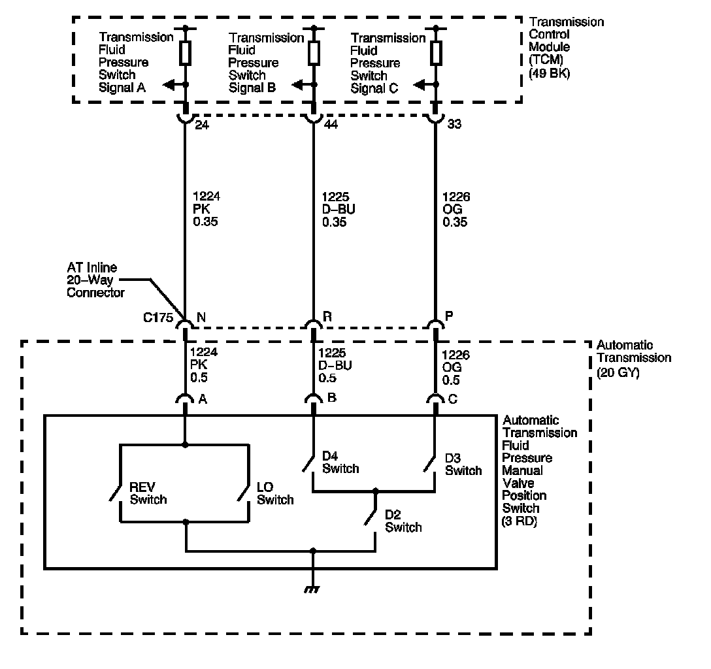

4L80-E / 4L85-E Automatic Transmission
DTC P1818

Circuit Description
The automatic transmission fluid pressure (TFP) manual valve position switch consists of 5 pressure switches and a transmission fluid temperature (TFT) sensor combined into 1 unit. The combined unit mounts on the valve body. The transmission control module (TCM) supplies ignition voltage for each range signal. By grounding 1 or more of these circuits through various combinations of the pressure switches, the TCM detects the manual valve position you select. The TCM compares the actual voltage combination of the switches to a TFP manual valve position switch combination table stored in memory.
The TFP manual valve position switch cannot distinguish between PARK and NEUTRAL because the monitored valve body pressures are identical. With the engine OFF and the ignition switch in the ON position, the TFP manual valve position switch indicates PARK/NEUTRAL. Disconnecting the automatic transmission (AT) inline 20-way connector removes the ground potential for the 3 range signals to the TCM. In this case, with the engine OFF, and the ignition switch in the ON position, D2 will be indicated.
When the TCM detects PARK/NEUTRAL or drive gear with a REVERSE ratio, DTC P1818 sets. DTC P1818 is a type B DTC.
DTC Descriptor
This diagnostic procedure supports the following DTC:
DTC P1818 Transmission Fluid Pressure (TFP) Valve Position Switch Indicates Drive without Drive Ratio
Conditions for Running the DTC
^ No transmission OSS DTCs P0722, or P0723.
^ No TFP DTCs P1810, P1816 or P1818.
^ The system voltage is 8-18 volts.
^ The calc. throttle position is 8 percent or greater.
^ The engine is running for 5 seconds or greater.
^ The transmission OSS speed is 50 RPM or greater.
^ The engine torque is 50 N.m (37 lb ft).
Conditions for Setting the DTC
The TCM detects a PARK/NEUTRAL or drive range with a REVERSE gear ratio for 10 seconds.
Action Taken When the DTC Sets
^ The TCM requests the engine control module (ECM) to illuminate the malfunction indicator lamp (MIL) during the second consecutive trip in which the Conditions for Setting the DTC are met.
^ The TCM commands maximum line pressure.
^ The TCM freezes transmission adaptive functions.
^ The TCM assumes D4 for shifting.
^ The ECM records the operating conditions when the Conditions for Setting the DTC are met. The ECM stores this information as Freeze Frame and Failure Records.
^ he TCM records the operating conditions when the Conditions for Setting the DTC are met. The TCM stores this information as Failure Records.
^ The TCM stores DTC P1818 in TCM history during the second consecutive trip in which the Conditions for Setting the DTC are met.
Conditions for Clearing the DTC
^ The TCM turns OFF the MIL after the third consecutive drive trip in which the diagnostic test runs and passes.
^ A scan tool can clear the DTC.
^ The TCM clears the DTC from TCM history if the vehicle completes 40 warm-up cycles without an emission related diagnostic fault occurring.
^ The TCM cancels the default actions when the ignition is OFF long enough in order to power down the TCM.
Diagnostic Aids
^ Refer to Transmission Fluid Pressure Manual Valve Position Switch Logic for the normal range signals and the invalid combinations. On the table, LOW is 0 volts, HI is ignition voltage.
^ Sediment in the valve body may cause improper operation of the TFP manual valve position switch. If sediment intrusion is suspected, clean the valve body and replace the TFP manual valve position switch.
Test Description
The numbers below refer to the step numbers on the diagnostic table.
3. This step compares the indicated range signal to the selected manual valve position.
5. This step tests for correct voltage from the TCM to the AT inline 20-way connector.